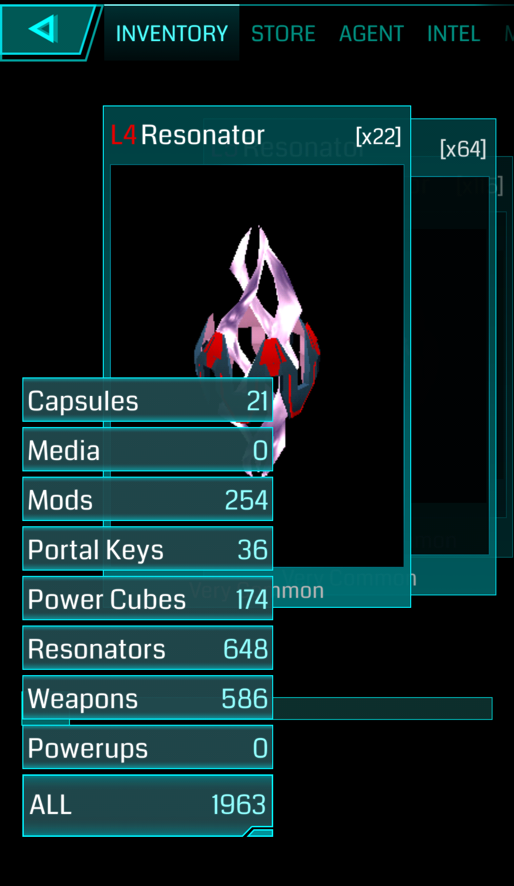

- CAPSULE: sono contenitori di oggetti. Permettono velocemente il passaggio di un elevato numero di oggetti (fino a un massimo di 100) e di catalogare le chiavi. Inoltre, passare le chiavi all’interno delle capsule (ad esempio chiavi strategiche) non permette alla fazione avversaria di vedere i titoli delle chiavi e capire eventuali piani.
- MEDIA: sono dei filmati che vengono rilasciati periodicamente da Niantic, con riportate novità e cose simili.
- MOD: sono dei “potenziamenti” che è possibile aggiungere ai portali (toccando un portale in range, tramite il pulsante “Upgrade”, sono posizionabili nei quattro Slot presenti sopra all’immagine del portale, con un massimo di 2 mod per giocatore).
- PORTAL KEY: sono le chiavi che servono per unire due portali tra loro, e ricaricarli a distanza. Un portale può fornire solo la propria chiave, mentre è possibile trovarne varie accanto ad un portale dopo che, attaccandolo, cadono i link che regge.
- POWER CUBE: (1-8) sono delle scorte di XM, utilizzabili per avere l'energia necessaria a compiere delle azioni
- RESONATOR: (1-8) si usano per catturare un portale, riempirlo per permettere link e field e alzarne il livello sovrascrivendo risonatori di livello più basso.
- WEAPONS: (1-8) si suddividono in XMP e Ultra strike
Ovviamente un virus o un refactor NON possono essere usati su un portale neutro.
È sempre importante ricordare che NON è possibile utilizzare risonatori, burster e power cubes di livello superiore al proprio.